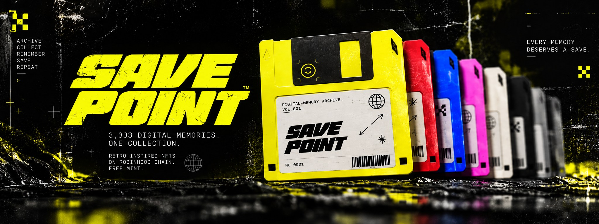

[ LORE / VOLUME 001 ]
THE ARCHIVE.
Before the cloud, there was the save button. Before infinite storage, every file mattered.

[ FILE SP-0001 / ORIGIN ]
EVERY MEMORY
DESERVES A SAVE.
Save Point is a digital collectibles project inspired by the physical objects we once trusted with our memories. A disk, a label, a timestamp. Tiny things that carried entire worlds.
Our planned 3,333-piece NFT collection explores that feeling through a shared floppy-disk silhouette and a range of archive-inspired visual traits: different shells, stickers, stamps, patterns, and signs of wear.
This is an artistic concept in development, not a promise of investment value or future utility.
FILE FORMATRETRO / DIGITAL
COLLECTION3,333 PLANNED
ART DIRECTIONARCHIVE / GLITCH
STATUSPRE-LAUNCH
[ VISUAL REFERENCE / ARCHIVE ]
